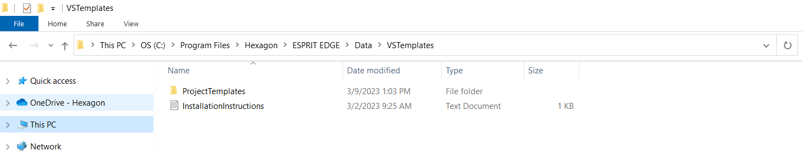
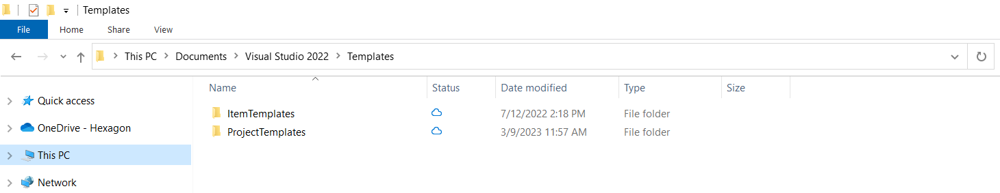
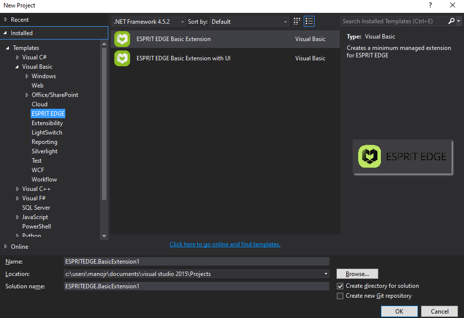
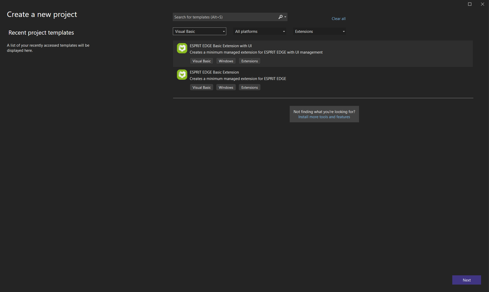

Browse to "C:\Program Files\Hexagon\ESPRIT EDGE\Data\VSTemplates" and copy the entire folder "ProjectTemplates".

Browse to "C:\Users\xxxxxxx\Documents\Visual Studio 20xx\Templates" and paste the previous copied folder.

You will find under "Installed/Visual Basic" a folder called "ESPRIT EDGE". This is the folder where you can find ESPRIT EDGE templates.

Set language filter "Visual Basic" and project type filter "extension".
